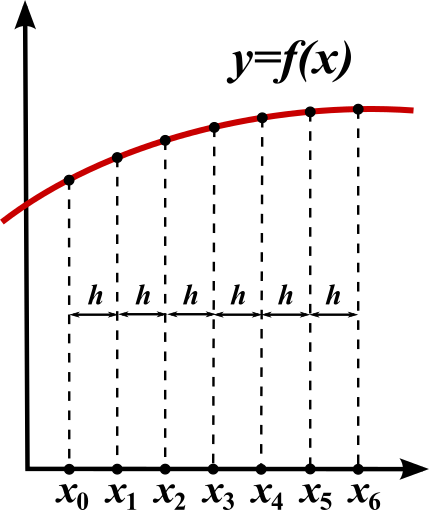

Newton's method
Newton's method is a root-finding algorithm which produces successively better approximations to the roots (or zeros) of a real-valued function.
The idea is to start with an initial guess which is reasonably close to the true root, then to approximate the function by its tangent line using calculus, and finally to compute the x-intercept of this tangent line by algebra.
The equation of the tangent line to the curve $y = f(x)$ at $x = x_n$ is:
\[y = f'(x_n)(x-x_n)+f(x_n)\]
Where $f'$ denotes the derivative.
The derivative of $f$ shows its rate of change with respect to $x$. Assuming no knowledge of calculs, we use an approximation method called finite difference method to replace the derivative term.

Finite difference method
Finite differences approximate the derivatives of functions via discretizations. Three types are commonly considerd: forward, backward and central finite differences. Here we will introduce central finite differences only, because it gives the best approximation of the derivative.

Consider $f(x)$ and its derivative at $x = a$, i.e., $f'(a)$. A central finite difference approximation of the derivative is given by:
\[f'(a) = \frac{f(a+h - f(a-h))}{2h}\]
The finite difference method relies on discretizing a function on a grid.

Back to Newton's method
We now replace the derivative in $y = f'(x_n)(x - x_n) + f(x_n)$ with its finite difference approximation.
To find a root of $f(x)$, we set $y=0$.
\[y = \frac{f(x_n+h) - f(x_n - h)}{2h}(x-x_n)+f(x_n)=0\]
To use this last formula iteratively, we use the following succession rule:
\[x_n+1 = x_n - 2h \frac{f(x_n)}{f(x_n+h)-f(x_n-h)}\]
Starting with an initial guess, $x_0$, that is near the solution, we can iterate to find the root. It is important to choose a sufficiently smalll $h$ to reduce the discretization error.